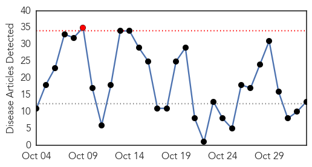
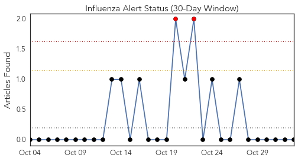
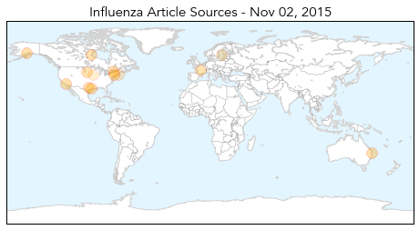
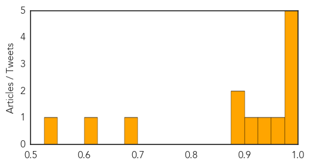

Toggle navigation
Early Warning
Daily Alerts
Influenza
Nov 02, 2015
Compare to:
-
Dengue Fever
Hemmorhagic Fever
Mold/Fungal Infection
Meningitis
Pertussis / Whooping Cough
Middle East Respiratory Syndrome
Cholera
Hepatitis
Chikungunya
Yellow Fever
Bubonic Plague
West Nile Virus
Swine Flu
Ebola
Measles
Unknown
Mumps
30 Day Trends
Web: 1
alerts
, 0
warnings
Twitter: 2
alerts
, 0
warnings
Top Articles:
1.000
Flu vaccinations available nowHealth News
0.999
Daily Checkup: Flu shots work
0.997
What You Need to Know About This Year's Flu Season
0.992
Why You Should Get a Flu Shot
0.985
How to avoid the flu with Dr. Kevin Most
0.955
Doctor gets his flu shot live on Healthwise at 5
0.946
Seasonal flu vaccine to start this month
0.924
Health department hosts flu clinic Nov. 5
0.895
Today's stories from newspapers in Flamborough
0.895
Avoid the holiday rush and get a flu shot now
0.696
Social Media, Data Analytics Enable Real-Time Flu Tracking
0.618
Monday's papers: Joutseno murder, pig farms, flu shot time, record highs
0.549
Avian influenza concerns loom large
Top Tweets:
No tweets found for Nov 02, 2015
Web/News Articles

Tweets

Article Locations

Article Confidences
